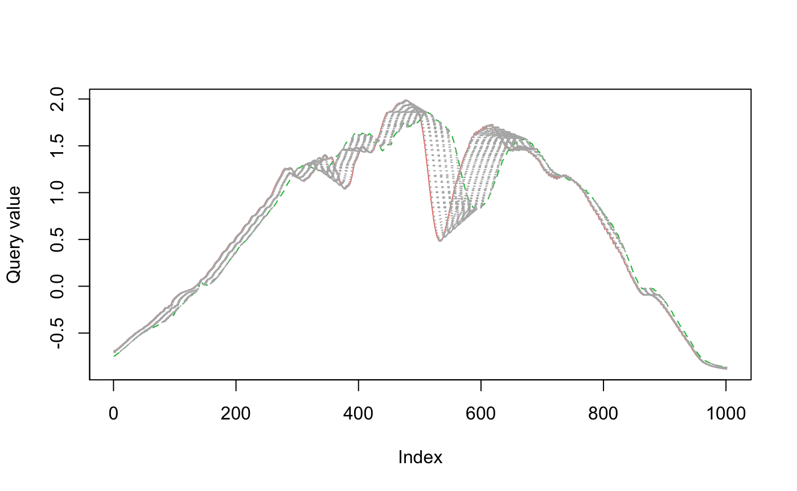

vignettes/dtw2_child.Rmd
dtw2_child.RmdIntroduction
Working with a set of time series measuring related observations requires a different set of tools compared to analyzing or forecasting a single time series.
If you want to cluster time series into groups with similar behaviors, one option is feature extraction: statistical summaries that characterize some feature of the time series, such as min, max, or spectral density. The feasts R package and the Python package tsfresh provide tools to make this easier.
Why not cluster on the time series directly? Standard methods don’t work as well, and can produce clusters that miss structure you can visually identify as “similar”.
Dynamic time warping is method that aligns with intuitive notions of time series similarity. To show how it works, I’ll walk through
how standard distance metrics fail to create useful time series clusters
dynamic time warping distance as a method for similarity
clustering similar time series
Distance Metrics
## ── Attaching packages ────────────────────────────────────────────────── tidyverse 1.2.1 ──## ✓ ggplot2 3.3.2 ✓ purrr 0.3.4
## ✓ tibble 3.0.3 ✓ dplyr 1.0.0
## ✓ tidyr 1.1.0 ✓ stringr 1.4.0
## ✓ readr 1.3.1 ✓ forcats 0.4.0## ── Conflicts ───────────────────────────────────────────────────── tidyverse_conflicts() ──
## x dplyr::filter() masks stats::filter()
## x dplyr::lag() masks stats::lag()library(dtwclust)
## Loading required package: proxy##
## Attaching package: 'proxy'## The following objects are masked from 'package:stats':
##
## as.dist, dist## The following object is masked from 'package:base':
##
## as.matrix## Loading required package: dtw## Loaded dtw v1.21-3. See ?dtw for help, citation("dtw") for use in publication.## dtwclust:
## Setting random number generator to L'Ecuyer-CMRG (see RNGkind()).
## To read the included vignettes type: browseVignettes("dtwclust").
## See news(package = "dtwclust") after package updates.##
## Attaching package: 'recipes'## The following object is masked from 'package:stringr':
##
## fixed## The following object is masked from 'package:stats':
##
## stepTo cluster, we need to measure the distance between every member of the group.1 Typically we think of Euclidean distance: the length of a straight line between two points.
This distance pops up all the time in data science, usually in Mean Squared Error (MSE) or it’s counterpart Root Mean Squared Error (RMSE). It’s used to measure regression error in machine learning, and assess the accuracy of a time series forecast.
## ── Attaching packages ───────────────────────────────────────────────────────── fpp3 0.3 ──## ✓ lubridate 1.7.9 ✓ feasts 0.1.4
## ✓ tsibble 0.9.2 ✓ fable 0.1.1.9000
## ✓ tsibbledata 0.2.0## ── Conflicts ──────────────────────────────────────────────────────────── fpp3_conflicts ──
## x lubridate::date() masks base::date()
## x dplyr::filter() masks stats::filter()
## x tsibble::interval() masks lubridate::interval()
## x dplyr::lag() masks stats::lag()## Plot variable not specified, automatically selected `.vars = Beer`
To evaluate the fit of the forecast to the actual data, you can calculate the Euclidean distance between the corresponding points in the time series and the forecasts. The smaller the distance, the better the forecast: the more similar the two series are.
A straight line between two points isn’t always the possible. In a city grid, we are constrained by the blocks. In this situation, the distance between two points is called the Manhattan distance.
knitr::include_graphics("283px-Manhattan_distance.svg.png")

Time series also need a special distance metric. The most common is called Dynamic Time Warping.
Time Series Distance
Plotted below are three time series. I’ve plotted blue and green to both overlap red. Is blue or green more similar to red?
eth_sample <- ethanol %>% filter(id %in% c(1, 2, 53)) eth_sample_unnested_trunc <- eth_sample %>% mutate(n = list(1:1751)) %>% unnest(c(ts, n)) %>% filter(between(n, 500, 1500)) eth_sample_trunc <- eth_sample_unnested_trunc %>% select(-n) %>% group_by(id, class) %>% summarise(ts = list(ts), .groups = "drop")
plot_overlap <- function(ids, x) { group_colors <- c(`1` = "#F8766D", `2` = "#619CFF") if (any(ids != c(1, 2))) { group_colors <- c(`1` = "#F8766D", `53` = "#00BA38") } x %>% filter(id %in% ids) %>% ggplot(aes(n, ts, color = as.factor(id), group = id)) + geom_line(show.legend = FALSE) + scale_color_manual(values = group_colors) + labs(x = NULL, y = NULL) } plots <- list(c(1, 2), c(1, 53)) %>% map(plot_overlap, eth_sample_unnested_trunc) plots[[1]] / plots[[2]]

I think it’s blue: blue and red both has an early dip after 750. Around 1000 they both have a slim, deep trough. The major difference is that blue seems shifted to the left.
Green is all wrong: where red dips around 750, green has a bump. And the dip after 1000 is wider and shallower.
The Euclidean distance tells a different story. Red is actually closer to green, because it has a smaller distance metric (9.78 vs 9.83).
eth_sample$ts %>% set_names(c("red", "blue", "green")) %>% simplify2array() %>% t() %>% dist()
## red blue
## blue 9.83149
## green 9.78531 9.82103Dynamic Time Warping
To capture our intuition about the similarity of red and blue, we need a new metric. This metric can’t simply measure the point-to-point distance between the series. As we saw, blue is shifted to the left of red, even though the shape is really similar. We need to warp time to account for this shift!
In the visualizations below2, you can see how dynamic time warping stretches (warps) time to match up nearby points.
plot_dtw <- function(ts1, ts2, ...) { dtw::dtw(ts1, ts2) %>% dtw::dtwPlotTwoWay(xts = ts1, yts = ts2, ...) } plot_dtw( eth_sample_trunc$ts[[1]], eth_sample_trunc$ts[[2]], col = c("#F8766D", "#619CFF") )

When comparing red to green below, there is a lot more warping going on to match up points (as measured by the light gray concentric lines between the series), so the time series are more dissimilar.
plot_dtw( eth_sample_trunc$ts[[1]], eth_sample_trunc$ts[[3]], col = c("#F8766D", "#00BA38") )

The dissimilarity between red and green is reflected when we calculate the dynamic time warping distance.
eth_sample$ts %>% set_names(c("red", "blue", "green")) %>% simplify2array() %>% t() %>% dist(method = "DTW")
## red blue
## blue 28.26073
## green 33.82476 31.50148Clustering Time Series
Equipped with a measure of similarity, we can now attempt to cluster the time series. The time series studied in previous examples are part of a set of 504 time series, belonging to four classes.
I’ll use step_dtw from my tsrecipes package to cluster using the dynamic time warping similarity metric. step_dtw uses the excellent dtwclust package behind the scenes.
if (!file.exists("ethanol_distmat.RDS")) { prepped <- recipe(ethanol) %>% step_dtw(ts, k = 4) %>% prep() prepped$steps[[1]]$dtwclust$ts@distmat %>% saveRDS("ethanol_distmat.RDS") } if (!file.exists("ethanol_clusters.RDS")) { ethanol_clusters <- recipe(ethanol) %>% step_dtw(ts, k = 4) %>% prep() %>% bake(ethanol) saveRDS(ethanol_clusters, "ethanol_clusters.RDS") } ethanol_clusters <- readRDS("ethanol_clusters.RDS")
ethanol_distmat <- readRDS("ethanol_distmat.RDS")
With clustering, I think it’s important to evaluate the clusters using objective and subjective criteria.
Subjective criteria include
visualizing the “shape” of time series within clusters to see if there is a pattern. If the shape isn’t obvious, you can try alternative methods or increase the number of clusters. Visualizations of noisy, high-frequency time series may not be useful. In this case, you may want to visualize smoothed trends of the cluster, rather than raw time series.
inspecting clusters for clutter: elements within the cluster that don’t seem to belong. This may indicate you need to increase the number of clusters.
Objective criteria include
checking the number of elements per cluster. Especially with hierarchical clustering, occasionally a cluster will have 90% of the data, which isn’t very useful.
evaluation against known classes. If working with unlabeled data, sometimes there may be a small portion of labeled data to evaluate against.
calculating cluster statistics.
Four classes are known ahead of time, so it seems reasonable to start with four clusters.
I always start with visualizing the time series within each cluster.
ethanol_clusters %>% rowwise() %>% mutate(n = list(1:1751)) %>% ungroup() %>% unnest(c(ts, n)) %>% ggplot() + geom_line(aes(n, ts, color = class, group = id), show.legend = FALSE) + facet_wrap(~dtwclust_ts)

Visually, there are distinct shapes within each cluster. Clusters 2 and 3 both have a clear middle dip. Cluster 1 has very few wiggles on the right, and cluster 4 is almost its mirror image, with few wiggles on the left.
All clusters seem a little clutter: especially 1 and 4 with all the wiggles on the left and right respectively.
Comparing the “shape” of the clusters to the shape of the individual classes, there doesn’t seem to be a lot of obvious similarity.
ethanol_clusters %>% rowwise() %>% mutate(n = list(1:1751)) %>% ungroup() %>% unnest(c(ts, n)) %>% ggplot(aes(n, ts, color = as.factor(dtwclust_ts))) + geom_line(aes(group = id), show.legend = FALSE) + facet_wrap(~class)

The actual classes of the time series do not visually group into distinct shapes, indicating to me there is a lot of variation within each class.
mm_model <- ethanol_clusters %>% mutate(dtwclust_ts = as.factor(dtwclust_ts)) %>% nnet::multinom(class ~ dtwclust_ts, data = .)
## # weights: 20 (12 variable)
## initial value 698.692358
## iter 10 value 692.557559
## final value 692.467993
## convergedPredicting the class based on the cluster is only 31% accurate. Better than random chance (25%), but still not great.
pred_eth <- ethanol_clusters %>% mutate(dtwclust_ts = as.factor(dtwclust_ts)) %>% mutate(pred = predict(mm_model, ., type = "class")) pred_eth %>% group_by(class, pred) %>% summarise(n = n()) %>% group_by(pred_correct = class == pred) %>% summarise(n = sum(n)) %>% mutate(percent = n / sum(n))
## `summarise()` regrouping output by 'class' (override with `.groups` argument)## `summarise()` ungrouping output (override with `.groups` argument)## # A tibble: 2 x 3
## pred_correct n percent
## <lgl> <int> <dbl>
## 1 FALSE 354 0.702
## 2 TRUE 150 0.298Based on this analysis, I bet the clustering will be more useful if there are more clusters. While each cluster has a unique shape, there is still a lot of clutter. Moreover, we see a large amount of variation within each class. There will need to be more clusters to capture that variation.
TODO
One of the most expensive parts of tsclust is calculating the distance matrix. If we could presupply the distance matrix as an option to step_dtw (or another step entirely), then we could significantly speed up the process.
what about step_proxy and use different clustering methods against that?
if (!file.exists("ethanol_clusters8.RDS")) { ethanol_clusters8 <- recipe(ethanol) %>% step_dtw(ts, k = 8) %>% prep() %>% bake(ethanol) saveRDS(ethanol_clusters8, "ethanol_clusters8.RDS") } ethanol_clusters8 <- readRDS("ethanol_clusters8.RDS")
model8 <- ethanol_clusters8 %>% mutate(dtwclust_ts = as.factor(dtwclust_ts)) %>% nnet::multinom(class ~ dtwclust_ts, data = .)
## # weights: 36 (24 variable)
## initial value 698.692358
## iter 10 value 681.029270
## iter 20 value 680.008252
## final value 680.005159
## convergedWith 8 clusters, there are more definition to the shapes, and a lot less clutter.
ethanol_clusters8 %>% rowwise() %>% mutate(n = list(1:1751)) %>% ungroup() %>% unnest(c(ts, n)) %>% ggplot() + geom_line(aes(n, ts, color = class, group = id), show.legend = FALSE) + facet_wrap(~dtwclust_ts)

pred_eth <- ethanol_clusters8 %>% mutate(dtwclust_ts = as.factor(dtwclust_ts)) %>% mutate(pred = predict(model8, ., type = "class")) pred_eth %>% group_by(class, pred) %>% summarise(n = n()) %>% group_by(pred_correct = class == pred) %>% summarise(n = sum(n)) %>% mutate(percent = n / sum(n))
## `summarise()` regrouping output by 'class' (override with `.groups` argument)## `summarise()` ungrouping output (override with `.groups` argument)## # A tibble: 2 x 3
## pred_correct n percent
## <lgl> <int> <dbl>
## 1 FALSE 346 0.687
## 2 TRUE 158 0.313Additionally, there is a 3% increase in accuracy.
Additional Clusters
You may have noticed that running step_dtw takes a long time. The bottleneck is calculating the dynamic time warping distance. Most implementations have a computational complexity of \(O(N^2)\)3 to calculate the distance between two time series, and that calculation must happen between every pair of time series in the dataset to cluster.
Fortunately, the dtwclust interface lets you precompute the the similarity matrix and supply that to the cluster algorithms. Care must be taken here to avoid data leakage (see the section below).
getwd()## [1] "/Users/Tim/rpackages/tsrecipes/vignettes"distmat <- readRDS("ethanol_distmat.RDS")
library(tidymodels)
## ── Attaching packages ───────────────────────────────────────────────── tidymodels 0.1.1 ──## ✓ broom 0.7.0 ✓ rsample 0.0.7
## ✓ dials 0.0.8 ✓ tune 0.1.1
## ✓ infer 0.5.3 ✓ workflows 0.1.3
## ✓ modeldata 0.0.2 ✓ yardstick 0.0.7
## ✓ parsnip 0.1.3## ── Conflicts ──────────────────────────────────────────────────── tidymodels_conflicts() ──
## x yardstick::accuracy() masks fabletools::accuracy()
## x scales::discard() masks purrr::discard()
## x dplyr::filter() masks stats::filter()
## x recipes::fixed() masks stringr::fixed()
## x infer::generate() masks fabletools::generate()
## x dplyr::lag() masks stats::lag()
## x parsnip::null_model() masks fabletools::null_model()
## x yardstick::spec() masks readr::spec()
## x recipes::step() masks stats::step()dtw_options = list(control = dtwclust::partitional_control(distmat = distmat)) # rec <- recipe( # ethanol, vars = names(ethanol), roles = c("id", "outcome", "input") # ) %>% rec <- recipe(ethanol) %>% update_role(everything(), new_role = "id") %>% update_role(class, new_role = "outcome") %>% step_dtw(ts, k = tune(), options = dtw_options) %>% step_mutate_at(all_predictors(), fn = factor)
val <- tibble( splits = list(make_splits( list(analysis = 1:504, assessment = 1:504), data = ethanol )) ) %>% new_rset(c(id = "validation"), subclass = "rset")
if (!file.exists("ethanol_tune_results.RDS")) { tune_results <- workflow() %>% add_model(multinom_reg() %>% set_engine("nnet")) %>% add_recipe(rec) %>% tune_grid( resamples = val, grid = expand_grid(k = c(4, 8, 16, 32, 64)) ) saveRDS(tune_results, "ethanol_tune_results.RDS") } tune_results <- readRDS("ethanol_tune_results.RDS")
tune_results %>% collect_metrics() %>% filter(.metric == "accuracy") %>% select(k, mean)
## # A tibble: 5 x 2
## k mean
## <dbl> <dbl>
## 1 4 0.335
## 2 8 0.333
## 3 16 0.379
## 4 32 0.409
## 5 64 0.472Finding useful clusters requires setting enough distinct clusters.
But finding these clusters is also sensitive to the many options available in dtwclust::tsclust.
Theoretically, you could tune across the number of clusters, as well as cluster (and distance methods).
It’s worth checking out dtwclust::compare_clusterings if you are interested in doing this. Right now it’s not supported in step_dtw. Clustering with tsclust takes a long time, and finding useful clusters can also be subjective.
I’d strongly recommend plotting clusters as a part of exploratory data analysis, rather than tuning blindly. Whether you doing a single clustering, or evaluating clusters objectively (scoring against classes) or subjectively (looking at the shape of clusters), you need to limit your explorations to the train set.
Just make sure you are still only using your training data, not your test data, when subjectively evaluating your clusters to avoid information leakage.
Be careful here: preprocessing, and even exploration on the training set can create information leakage, make your model appear more effective than it actually is.
The UC Business Analytics R Programming Guide has an excellent series on clustering, covering dissimilarity measures to the final clustering algorithms.↩︎
https://www.r-bloggers.com/time-series-matching-with-dynamic-time-warping/↩︎
Some improvements can be made.
dtwclustoffersdtw_basicby default, which is significantly faster, with fewer features. And the theoretical computational complexity is \(O(n^2/\log\log(n))\), although I don’t know if this has been implemented anywhere, or if its technically feasible to do so.↩︎